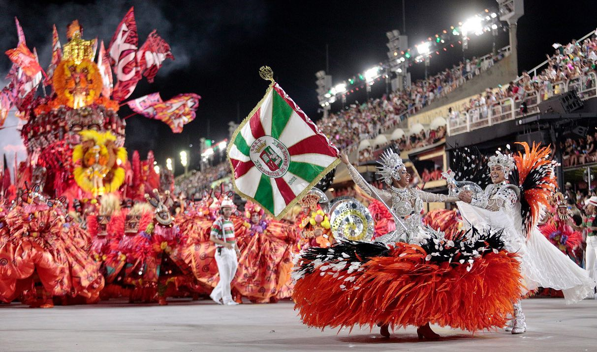

Dança
O que é dança?
A dança é um tipo de manifestação artistica que utiliza o corpo como instrumento criativo.
Geralmente, essa forma do harmonias corporais.
Tipos de dança
1. Samba
No Brasil, uma das manifestações culturais é o samba, da qual integram a dança e uma musica.

2 Dança Moderna (ballet)
2. Dança Classica (ballet)
O ballet é um estilo de dança classica que surgiu como um simbolo de status social na época
renascentista e se consolidou no período chamado romantismo (século 19).
imagem>
renascentista e se consolidou no período chamado romantismo (século XIX).
3 Dança Moderna
3. Dança Moderna
Dança moderna é o termo usado para designar um estilo de dança que surgiu no início do
século 20, junto com a arte moderna.